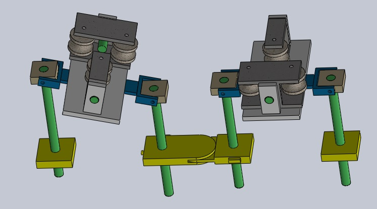
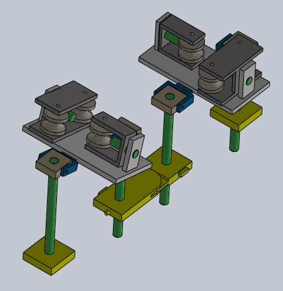
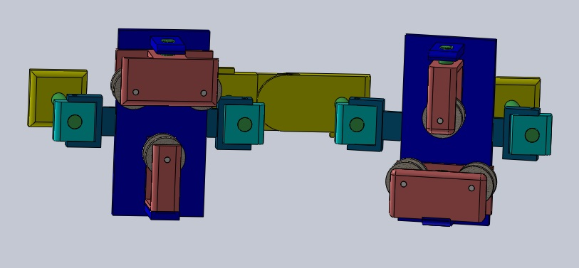

JANUARY-APRIL 2016 | ZINE LAB | MNIT JAIPUR | Publication Link
ABOUT THE EVENT
The event GRIDTECH, is an international technology exhibition event organised by Power Grid Corporation Of India Limited(PGCIL), Government Of India. It also features a Student's Pavallion section where students were supposed to present their innovation that could help solve the problems related generation, transmission, distribution and other needs of today's electricity market.
OBJECTIVE
Building a robotic system for high-voltage power transmission line monitoring, maintenance and repair in live condition.
RESEARCH ASPECTS
• Powered by the on-board computation power of a Raspberry Pi, the system fed sensor data to a URL which was retrieved at the control station for monitoring
• HILS model signals were transmitted to the remotely operating robotic setup via Simulink using the internal MATLAB web browser being triggered multiple times. It was slightly slow but good enough for proof-of-conccept demonstration
• The CAD model of the robot assembly was imported from Solidworks to Simulink to interface with the controller signals reaching MATLAB via Serial communication
• The input signals from the controller simultaneously manipulated the Simulink simulated model as well the real-life model operating remotely
METHODOLOGY
The system was designed to traverse through the power transmission lines in live condition. This standalone system was equipped with numerous on-board sensors that measure various parameters that it needs to
measure in order to ascertain the condition of the power line. The system had on-board cameras, current sensors, voltage sensors, magnetic field sensor, temperature sensor, smoke sensor and laser detection sensors. All these supplied real-time data about the condition of the transmission line while the system covers the entire length of the line. The system was controlled over the internet via a controller that provided real-time animation and camera feed of the motion.
The system was capable of traversing through multiple towers owing to its modular retractable design. It used the Hardware in the Loop Simulation(HILS) setup to animate the real-time functioning of the remotely operating system, thereby giving the control room operator, a bird's eye view of the same.
RESULTS
• Won the first prize for our innovative robotic system
• Patent Published for the innovative setup
• Invitation from various power corporations inlcuding Central Power Research Insititute(CPRI) for testing of our robotic system
GALLERY
  